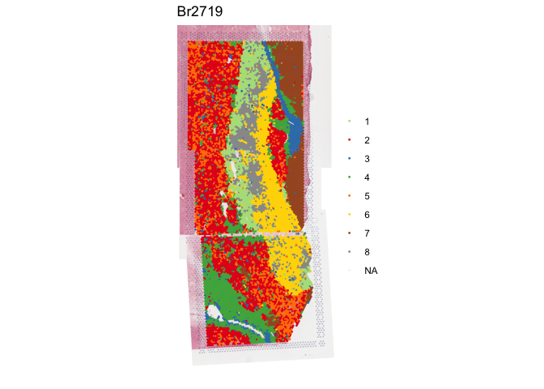

visiumStitched provides helper functions for working with multiple Visium capture areas that overlap each other. This package was developed along with the companion example use case data available from https://github.com/LieberInstitute/visiumStitched_brain. visiumStitched prepares SpaceRanger (10x Genomics) output files so you can stitch the images from groups of capture areas together with Fiji. Then visiumStitched builds a SpatialExperiment object with the stitched data and makes an artificial hexagonal grid enabling the seamless use of spatial clustering methods that rely on such grid to identify neighboring spots, such as PRECAST and BayesSpace. The SpatialExperiment objects created by visiumStitched are compatible with spatialLIBD, which can be used to build interactive websites for stitched SpatialExperiment objects (check the example human brain data). visiumStitched also enables casting SpatialExperiment objects as Seurat objects.
For details, check the documentation site.
Example data processed with visiumStitched
Here is example human brain data from LieberInstitute/visiumStitched_brain that was stitched together using visiumStitched. The resulting data can be accessed and visualized with spatialLIBD version 1.17.8 or newer.
## Check that you have a recent version of spatialLIBD installed
stopifnot(packageVersion("spatialLIBD") >= "1.17.8")
## Download the spot-level data, which is a SpatialExperiment object
spe <- spatialLIBD::fetch_data(type = "visiumStitched_brain_spe")
#> snapshotDate(): 2024-04-29
#> 2024-10-14 11:39:40.997043 loading file /users/neagles/.cache/R/BiocFileCache/feb652e603a7a_visiumStitched_brain_spe.rds%3Frlkey%3Dnq6a82u23xuu9hohr86oodwdi%26dl%3D1
## Explore the stitched data
spe
#> class: SpatialExperiment
#> dim: 26369 13965
#> metadata(0):
#> assays(2): counts logcounts
#> rownames(26369): ENSG00000238009 ENSG00000241860 ... ENSG00000278817
#> ENSG00000277196
#> rowData names(7): source type ... gene_type gene_search
#> colnames(13965): AAACAACGAATAGTTC-1_V13B23-283_A1
#> AAACAAGTATCTCCCA-1_V13B23-283_A1 ... TTGTTTGTATTACACG-1_V13B23-283_D1
#> TTGTTTGTGTAAATTC-1_V13B23-283_D1
#> colData names(40): sample_id in_tissue ... precast_k4 precast_k8
#> reducedDimNames(1): PCA
#> mainExpName: NULL
#> altExpNames(0):
#> spatialCoords names(2) : pxl_col_in_fullres pxl_row_in_fullres
#> imgData names(4): sample_id image_id data scaleFactor
## Show clustering results from PRECAST at k = 8
spatialLIBD::vis_clus(
spe,
clustervar = "precast_k8",
is_stitched = TRUE
)
Installation instructions
Get the latest stable R release from CRAN. Then install visiumStitched from Bioconductor using the following code:
if (!requireNamespace("BiocManager", quietly = TRUE)) {
install.packages("BiocManager")
}
BiocManager::install("visiumStitched")Citation
Below is the citation output from using citation('visiumStitched') in R. Please run this yourself to check for any updates on how to cite visiumStitched.
print(citation("visiumStitched"), bibtex = TRUE)
#> Warning in packageDescription(pkg = package, lib.loc = dirname(dir)): no
#> package 'visiumStitched' was found
#> Eagles NJ, Collado-Torres L (2024). _Enable downstream analysis of
#> Visium capture areas stitched together with Fiji_.
#> doi:10.18129/B9.bioc.visiumStitched
#> <https://doi.org/10.18129/B9.bioc.visiumStitched>,
#> https://github.com/LieberInstitute/visiumStitched/visiumStitched - R
#> package version, <http://www.bioconductor.org/packages/visiumStitched>.
#>
#> A BibTeX entry for LaTeX users is
#>
#> @Manual{,
#> title = {Enable downstream analysis of Visium capture areas stitched together with Fiji},
#> author = {Nicholas J. Eagles and Leonardo Collado-Torres},
#> year = {2024},
#> url = {http://www.bioconductor.org/packages/visiumStitched},
#> note = {https://github.com/LieberInstitute/visiumStitched/visiumStitched - R package version},
#> doi = {10.18129/B9.bioc.visiumStitched},
#> }
#>
#> Eagles NJ, Bach S, Tippani M, Ravichandran P, Du Y, Miller RA, Hyde TM,
#> Page SC, Martinowich K, Collado-Torres L (2024). "visiumStitched."
#> _bioRxiv_. doi:10.1101/TODO <https://doi.org/10.1101/TODO>,
#> <https://www.biorxiv.org/content/10.1101/TODO>.
#>
#> A BibTeX entry for LaTeX users is
#>
#> @Article{,
#> title = {visiumStitched},
#> author = {Nicholas J. Eagles and Svitlana Bach and Madhavi Tippani and Prashanthi Ravichandran and Yufeng Du and Ryan A. Miller and Thomas M. Hyde and Stephanie C. Page and Keri Martinowich and Leonardo Collado-Torres},
#> year = {2024},
#> journal = {bioRxiv},
#> doi = {10.1101/TODO},
#> url = {https://www.biorxiv.org/content/10.1101/TODO},
#> }Please note that the visiumStitched was only made possible thanks to many other R and bioinformatics software authors, which are cited either in the vignettes and/or the paper(s) describing this package.
Code of Conduct
Please note that the visiumStitched project is released with a Contributor Code of Conduct. By contributing to this project, you agree to abide by its terms.
Development tools
- Continuous code testing is possible thanks to GitHub actions through usethis, remotes, and rcmdcheck customized to use Bioconductor’s docker containers and BiocCheck.
- Code coverage assessment is possible thanks to codecov and covr.
- The documentation website is automatically updated thanks to pkgdown.
- The code is styled automatically thanks to styler.
- The documentation is formatted thanks to devtools and roxygen2.
For more details, check the dev directory.
This package was developed using biocthis.